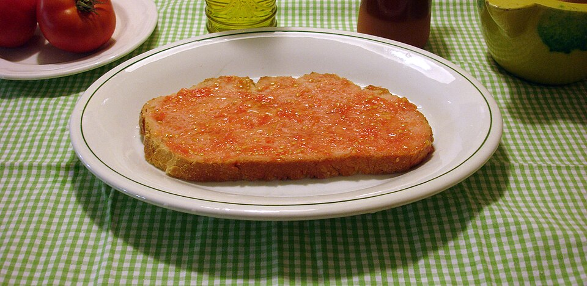
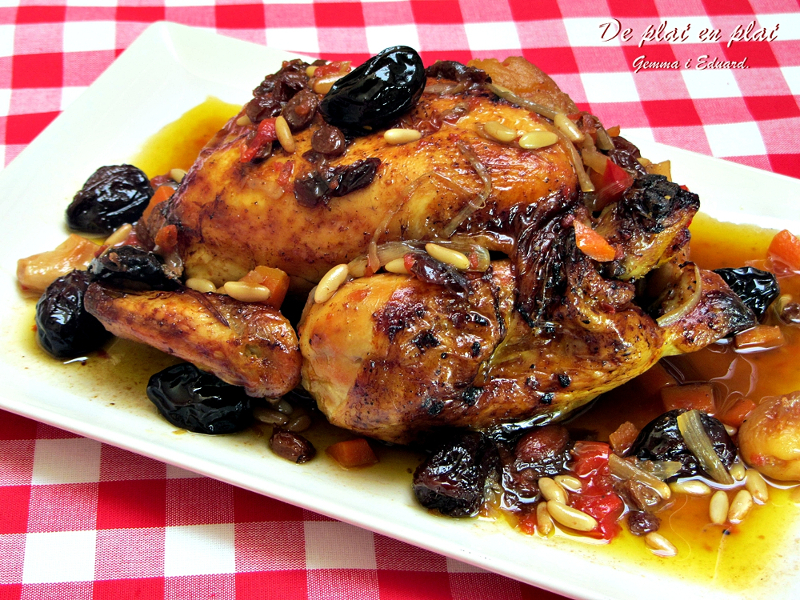

Pa amb tomàquet
Un clàssic imprescindible de la cuina catalana.
Veure receptaExplora una selecció de plats tradicionals catalans, elaborats amb ingredients autèntics i molta tradició.

Un clàssic imprescindible de la cuina catalana.
Veure recepta
El postre més emblemàtic de tota Catalunya.
Veure recepta
Verdures rostides amb un sabor únic exquisit.
Veure receptaEl plat d’hivern més tradicional de Catalunya.
Veure recepta
Un rostit clàssic amb aromes de festa major.
Veure receptaEls canelons tradicionals de sempre per Sant Esteve.
Veure recepta